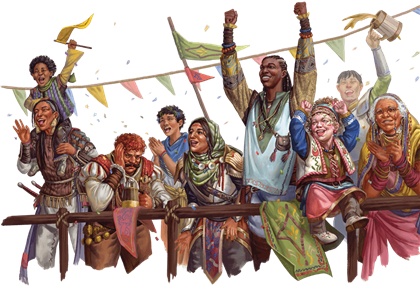

Présents dans tout le multivers, les humains sont aussi nombreux que variés, et ils cherchent souvent à accomplir le plus possible durant les années qui leur sont accordées. Leur ambition et leur ingéniosité sont admirées, respectées et parfois redoutées sur de nombreux mondes.
Comme les peuples de la Terre, les humains affichent une grande diversité d'apparences et vénèrent de nombreuses divinités. Les érudits débattent de leur origine, mais l'un des plus anciens rassemblements humains connus aurait eu lieu à Sigil, la cité en forme de tore au centre du multivers, où serait née la langue commune. De là, les humains auraient pu se répandre dans toutes les régions du multivers, emportant avec eux le cosmopolitisme de la Cité des Portes.